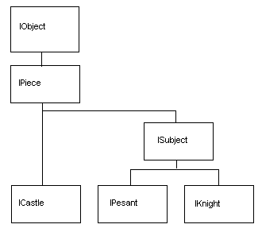

| Overview Features Download Source Code Installing Rules Playing Developing a Ruler Contributing FAQ |
Developing a RulerTo become a particpant in the game you first need to create a Ruler. The Ruler is your proxy, in that during the game the Ruler is responsible for formulating battle strategies and moving/controlling pieces as you have programmed it to. To create a simple ruler requires very little coding. The random ruler is an example of a very simple Ruler which moves its Subjects around the board randomly. Start by creating a class derived from net.sourceforge.battlefieldjava.ruler.Ruler. You need to provide an implementation for each of the following methods:
The orderSubjects method is where all of the action happens. Each round, orderSubjects will be called once for each ruler loaded into the game, when it's their turn to move. During the call to orderSubjects you need to move any pieces that you want to move during that round. The base Ruler class provides a set of methods which allow you to get access to your set of pieces: IPeasant[]getPeasants()
- returns an array of all your peasants (that are still alive).IKnight[]
getKnights()
- returns an array of all your knights.To move a subject just call 'this.move(subject,
direction)' from
within the orderSubjects
method. A
Subject (knight or peasant) can move in any one of eight directions on
the board. The
directions are defined as points on the compass where North is up the
screen, South down, East is to the right of the Screen and West the
left. To move a Subject pass in the appropriate value to the move
method which corresponds to
the desired point on the compass.The
following
eight points and their equivalent value is as follows:
Exploring the BattlefieldTo
create an effective ruler its no use just moving
your Subject around, you need to be able to explore the battlefield to
determine the disposition of your enemies. The
battlefield is made up of a grid, each square on the grid is
represented
by a Location which is defined by its x and y co-ordinates (zero
based). The World class provides a number of methods to help you exploring the Battlefield. IRuler[]
getOtherRulers() -
returns an array of all the enemy
rulers.IPeasant[]
getOtherPeasants() - returns
an array of all enemy peasants.IKnight[]
getOtherKnights() - returns
an array of all enemy
knights.enemy
knights and
peasants.enemy
knights,
peasants and castles.You can also directly obtain a location at a given x, y co-ordinate by calling World.getLocation(x,y). Once you have a Location you can determine its owner by calling location.getOwner() and its occupant by calling location.getOccupant(). The battlefield size can be determined from World.WIDTH and World.HEIGHT. The co-ordinate system is zero base so valid locations are in the range for x of 0 to World.WIDTH -1 and for y of 0 to World.HEIGHT - 1 where 0, 0 is in the top-left hand corner of the grid. Class Hierarchy  |